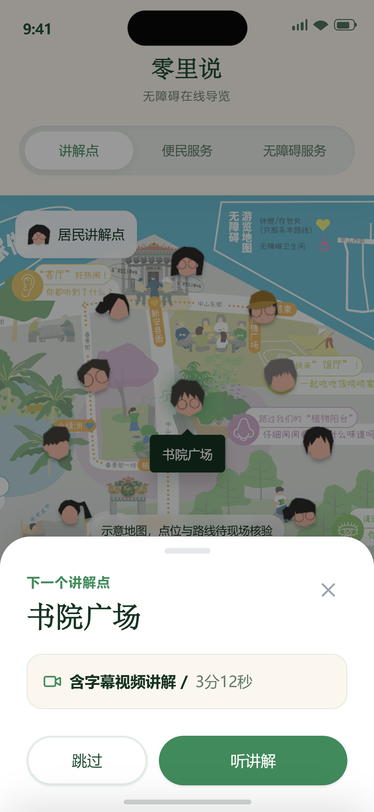
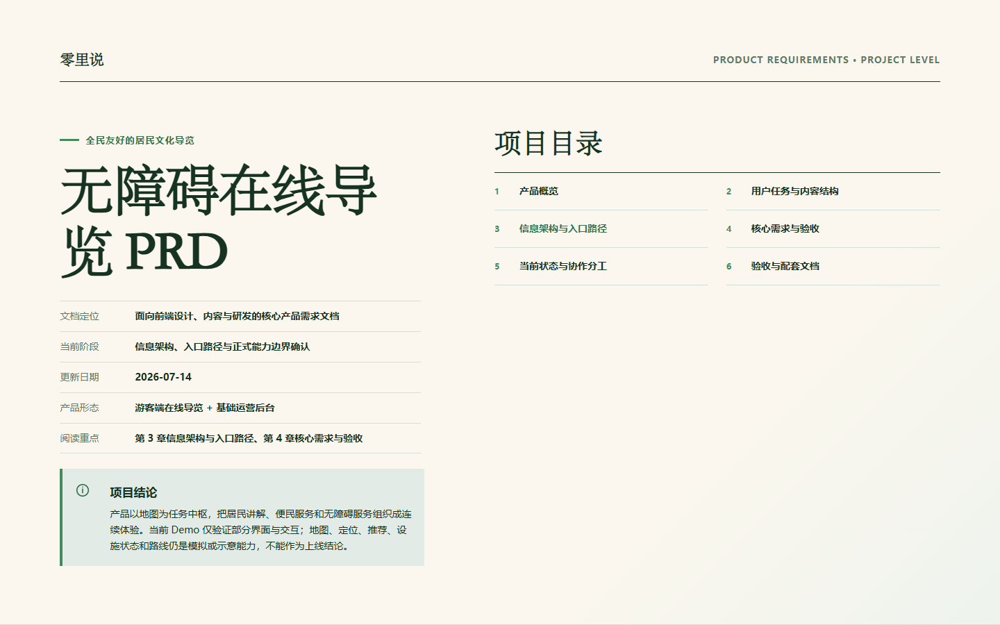

01INTERACTIVE DEMO
体验可点击导览
体验地图分类、居民讲解，以及讲解完成后回到地图选择下一站的连续导览流程。
全民友好的居民文化导览
面向南头古城现场游客，以地图连接居民讲解、便民服务和无障碍服务；一段讲解结束后先回到地图确认下一站，再继续进入新的地点故事。

01INTERACTIVE DEMO
体验地图分类、居民讲解，以及讲解完成后回到地图选择下一站的连续导览流程。

02PRODUCT REQUIREMENTS
阅读产品背景、用户任务、信息架构、核心需求、能力边界、验收与协作分工。